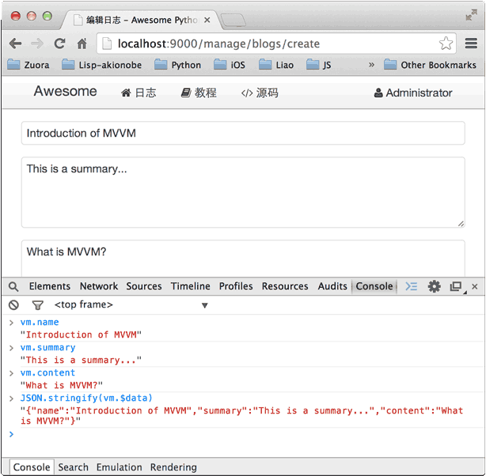

23-11 Day 11 - 编写日志创建页
在Web开发中，后端代码写起来其实是相当容易的。
例如，我们编写一个REST API，用于创建一个Blog：
@api
@post('/api/blogs')
def api_create_blog():
i = ctx.request.input(name='', summary='', content='')
name = i.name.strip()
summary = i.summary.strip()
content = i.content.strip()
if not name:
raise APIValueError('name', 'name cannot be empty.')
if not summary:
raise APIValueError('summary', 'summary cannot be empty.')
if not content:
raise APIValueError('content', 'content cannot be empty.')
user = ctx.request.user
blog = Blog(user_id=user.id, user_name=user.name, name=name, summary=summary, content=content)
blog.insert()
return blog
编写后端Python代码不但很简单，而且非常容易测试，上面的API：api_create_blog()本身只是一个普通函数。
Web开发真正困难的地方在于编写前端页面。前端页面需要混合HTML、CSS和JavaScript，如果对这三者没有深入地掌握，编写的前端页面将很快难以维护。
更大的问题在于，前端页面通常是动态页面，也就是说，前端页面往往是由后端代码生成的。
生成前端页面最早的方式是拼接字符串：
s = '<html><head><title>'
+ title
+ '</title></head><body>'
+ body
+ '</body></html>'
显然这种方式完全不具备可维护性。所以有第二种模板方式：
<html>
<head>
<title></title>
</head>
<body>
</body>
</html>
ASP、JSP、PHP等都是用这种模板方式生成前端页面。
如果在页面上大量使用JavaScript（事实上大部分页面都会），模板方式仍然会导致JavaScript代码与后端代码绑得非常紧密，以至于难以维护。其根本原因在于负责显示的HTML DOM模型与负责数据和交互的JavaScript代码没有分割清楚。
要编写可维护的前端代码绝非易事。和后端结合的MVC模式已经无法满足复杂页面逻辑的需要了，所以，新的MVVM：Model View ViewModel模式应运而生。
MVVM最早由微软提出来，它借鉴了桌面应用程序的MVC思想，在前端页面中，把Model用纯JavaScript对象表示：
<script>
var blog = {
name: 'hello',
summary: 'this is summary',
content: 'this is content...'
};
</script>
View是纯HTML：
<form action="/api/blogs" method="post">
<input name="name">
<input name="summary">
<textarea name="content"></textarea>
<button type="submit">OK</button>
</form>
由于Model表示数据，View负责显示，两者做到了最大限度的分离。
把Model和View关联起来的就是ViewModel。ViewModel负责把Model的数据同步到View显示出来，还负责把View的修改同步回Model。
ViewModel如何编写？需要用JavaScript编写一个通用的ViewModel，这样，就可以复用整个MVVM模型了。
好消息是已有许多成熟的MVVM框架，例如AngularJS，KnockoutJS等。我们选择Vue这个简单易用的MVVM框架来实现创建Blog的页面templates/manage_blog_edit.html：
{％ extends '__base__.html' ％}
编辑日志
<script>
var
action = '',
redirect = '';
var vm;
$(function () {
vm = new Vue({
el: '#form-blog',
data: {
name: '',
summary: '',
content: ''
},
methods: {
submit: function (event) {
event.preventDefault();
postApi(action, this.$data, function (err, r) {
if (err) {
alert(err);
}
else {
alert('保存成功！');
return location.assign(redirect);
}
});
}
}
});
});
</script>
<div class="uk-width-1-1">
<form id="form-blog" v-on="submit: submit" class="uk-form uk-form-stacked">
<div class="uk-form-row">
<div class="uk-form-controls">
<input v-model="name" class="uk-width-1-1">
</div>
</div>
<div class="uk-form-row">
<div class="uk-form-controls">
<textarea v-model="summary" rows="4" class="uk-width-1-1"></textarea>
</div>
</div>
<div class="uk-form-row">
<div class="uk-form-controls">
<textarea v-model="content" rows="8" class="uk-width-1-1"></textarea>
</div>
</div>
<div class="uk-form-row">
<button type="submit" class="uk-button uk-button-primary">保存</button>
</div>
</form>
</div>
初始化Vue时，我们指定3个参数：
el：根据选择器查找绑定的View，这里是#form-blog，就是id为form-blog的DOM，对应的是一个
<form>标签；data：JavaScript对象表示的Model，我们初始化为{ name: '', summary: '', content: ''}；
methods：View可以触发的JavaScript函数，submit就是提交表单时触发的函数。
接下来，我们在
<!-- input的value和Model的name关联起来了 -->
<input v-model="name" class="uk-width-1-1">
Form表单通过
需要特别注意的是，在MVVM中，Model和View是双向绑定的。如果我们在Form中修改了文本框的值，可以在Model中立刻拿到新的值。试试在表单中输入文本，然后在Chrome浏览器中打开JavaScript控制台，可以通过vm.name访问单个属性，或者通过vm.$data访问整个Model：

如果我们在JavaScript逻辑中修改了Model，这个修改会立刻反映到View上。试试在JavaScript控制台输入vm.name = 'MVVM简介'，可以看到文本框的内容自动被同步了：

双向绑定是MVVM框架最大的作用。借助于MVVM，我们把复杂的显示逻辑交给框架完成。由于后端编写了独立的REST API，所以，前端用AJAX提交表单非常容易，前后端分离得非常彻底。